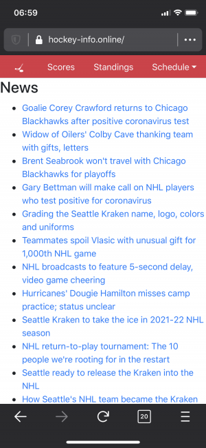

This is probably as “complete” as the Hockey-Info project may ever get so I figured its worth an actual blog post (and git tag at v1.0 too). A little over a year ago I was fed up with the NHL’s mobile website and decided I wanted to create something that gave me all the information without the associated fluff and annoyance. I had already spent time documenting the NHL API and using that knowledge to build smaller things like a sopel plugin for hockey stats. So I started throwing things together with Flask and suddenly hockey-info.online came to be!
Features
- News Headlines
- Scores view (only shows today’s games/scores)
- Standings (grouped by Conference/Division and sometimes showing Wildcards)
- Schedule (day, week and month views, team specific or league wide)
- Team Views
- Regular Season
- Playoffs
- Previous Games
- Game details
- Box Score information
- Goals by period with details
- Shots on goal by period
- Penalties by period with details
Important Details
Built in Python 3 with Flask, Requests, and some various other bits and bobs. It runs either by itself with the usual process to launch a Flask application or if you are so inclined there is a Dockerfile that can be used to launch it with a little less pain.
There is some caching going on with requests_cache however this is by no means optimal, I would like to eventually do more work with a proper web cache but for now this works since the site is so light weight. I make use of CDNs for all the JavaScript so that also helps speed things up (and more importantly move the burden off of wherever you choose to run it in the first place).
Timezone awareness is non-existent, I basically converted everything from whatever the NHL stores (UTC time/date) to Eastern Time since that is where I live. I try to be very privacy conscious and I couldn’t justify the time expenditure in methods of determining user location for time conversion processes, if someone wants to suggest it or contribute it PRs are welcome.
Legal Considerations
I have zero affiliation with the NHL beyond sometimes buying their branded merchandise and viewing their games when I get the chance. There are no ads served by the application (or even any decent way to add them without altering all the templates) so I make no money from anything (not even the blog).